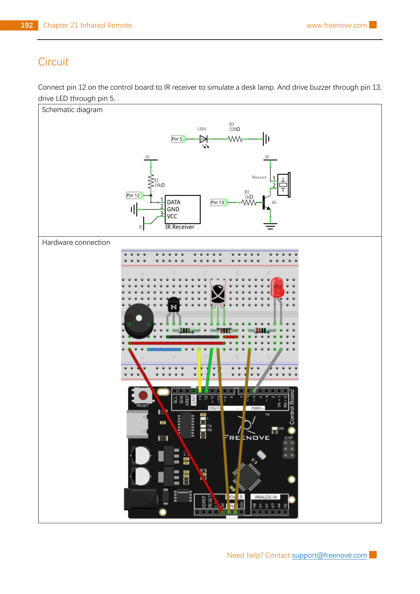

Keep the Project 21.1 IR receiver on D12, add the Project 21.2 LED output on D5, then give two buttons from your remote an on/off job.
Gather the parts
Uno-compatible board and USB cable
Breadboard
Infrared remote and its correctly identified battery
Three-pin IR receiver with documented DATA, GND, and VCC labels
One LED
One 220 Ω resistor and one 10 kΩ resistor
Seven male-to-male jumper wires
Safety boundary: unplug USB before moving wires. This is only a low-voltage LED demonstration. Never connect this circuit, an Arduino pin, a breadboard, a relay, or this lesson’s LED to AC mains, a wall outlet, or a household lamp. A real lamp needs suitably rated enclosed equipment and a qualified adult/professional installation; it is outside this lesson. Do not infer the pin order of a bare three-pin receiver, and do not use a different LED color or a component that gets hot without checking its documentation. Keep remote coin cells away from children and pets; do not short, heat, crush, disassemble, or recharge them. Stop if anything is damaged, hot, or smells unusual.
Build it, one check at a time
Step 1 — See the two jobs
Your remote sends a coded infrared message. The receiver reports it on D12. The Arduino decides whether that message means “on” or “off,” then uses PWM-capable D5 to set the LED’s brightness. The source calls the LED a desk-lamp simulation; here it remains a small, low-voltage LED model.

Reference image: Freenove Ultimate Starter Kit, Tutorial.pdf, Chapter 21, Project 21.2 circuit page (printed page 192; PDF page 196), an unchanged non-generated rasterization. Copyright Freenove; used under CC BY-NC-SA 3.0. This lesson uses the shown IR receiver and LED portions only; it does not build the separate buzzer/transistor portion. The public tutorial, source license, and other references are linked in Reference pages.
Step 2 — Keep the receiver circuit from Week 20
Use your receiver’s own labels and the exact Freenove Project 21.1/21.2 circuit—not the position of legs in a photograph. With USB still unplugged, trace these four connections:
Arduino 5 V → IR receiver VCC
Arduino GND → IR receiver GND
Arduino D12 → IR receiver DATA
10 kΩ pull-up resistor → between IR receiver DATA and Arduino 5 V
The 10 kΩ resistor joins the DATA point to 5 V; it is not in series with the receiver power wire. If your documented breakout has a different supply voltage, wiring, or built-in pull-up, stop and use its own documentation instead of guessing.
Step 3 — Add only the LED “lamp” branch
Use the LED branch in the Project 21.2 diagram. The LED has a direction: its anode is the positive side, and its cathode is the negative side. On many loose LEDs the longer lead is the anode and the flat edge marks the cathode, but verify your exact part before power is connected. Make these connections:
Arduino D5 → LED anode
LED cathode → 220 Ω resistor → Arduino GND
The 220 Ω resistor limits LED current and may be on either side of the LED electrically; this page follows the source drawing with it between cathode and ground. Do not omit it. D5 is a PWM output on an Uno-compatible board, so analogWrite() can choose brightness from 0 (off) to 255 (full duty cycle). The source diagram also shows a buzzer, NPN transistor, 1 kΩ resistor, and D13; leave that separate branch out for this focused LED lesson.
Step 4 — Choose values you actually observed
Open your Week 20 Serial Monitor notes. Press your chosen “on” and “off” buttons briefly and record the command values printed by the current IRremote sketch. Do not copy Freenove’s historical raw values (0xFF6897, 0xFF30CF, and so on): remote models, protocols, and library APIs can differ. In the sketch below, replace the two placeholder values with the command values from your remote, then change commandsAreConfigured from false to true. Leaving it false keeps the LED off, which is a useful safety check while you are still reading values.
Step 5 — Upload the guarded LED controller
In Arduino IDE, install current IRremote by Armin Joachimsmeyer, reconnect USB, select your board and port, and upload. Open Serial Monitor at 9600 baud. This original teaching sketch uses the maintained IRremote.hpp interface, the source’s D12 receiver and D5 LED assignments, and a repeat-frame check. It saves the command and repeat flag before IrReceiver.resume() so the receiver can immediately listen again.
#include <IRremote.hpp>
const byte receivePin = 12;
const byte lampPin = 5;
const bool commandsAreConfigured = false; // Change to true after replacing both placeholders.
const uint16_t lampOnCommand = 0x0000; // Replace with your observed command.
const uint16_t lampOffCommand = 0x0000; // Replace with your observed command.
void setLamp(byte brightness) {
analogWrite(lampPin, brightness);
}
void setup() {
Serial.begin(9600);
pinMode(lampPin, OUTPUT);
setLamp(0);
IrReceiver.begin(receivePin, ENABLE_LED_FEEDBACK);
Serial.println(F("Remote LED controller ready"));
}
void loop() {
if (IrReceiver.decode()) {
uint16_t command = IrReceiver.decodedIRData.command;
bool isRepeat = IrReceiver.decodedIRData.flags & IRDATA_FLAGS_IS_REPEAT;
IrReceiver.resume();
if (!commandsAreConfigured) {
Serial.println(F("Add your two observed commands, then set commandsAreConfigured true."));
setLamp(0);
return;
}
if (isRepeat) return;
if (command == lampOnCommand) {
analogWrite(lampPin, 255);
Serial.println(F("LED lamp on"));
} else if (command == lampOffCommand) {
analogWrite(lampPin, 0);
Serial.println(F("LED lamp off"));
}
}
}
Test slowly: tap your on button once and look for “LED lamp on”; tap off once and look for “LED lamp off.” A held button can generate repeat data, and this sketch ignores it. If the LED never lights, unplug USB before checking LED direction, the 220 Ω resistor, D5, common ground, receiver labels, D12, and the two values you wrote. Never replace the LED branch with a mains-powered device.
Tiny challenge
After the on/off version works, choose a third command you measured. Add one more else if that calls setLamp(63) for a gentler glow. Explain why you should test it with the same low-voltage LED—not a real lamp or appliance.
The unchanged reference image is from Freenove and used under CC BY-NC-SA 3.0. The learner-facing instructions and clearly named teaching sketch are original. No physical hardware was tested for this lesson.